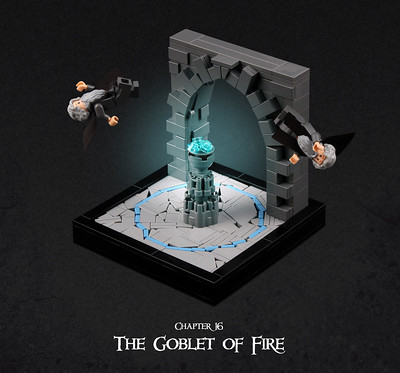
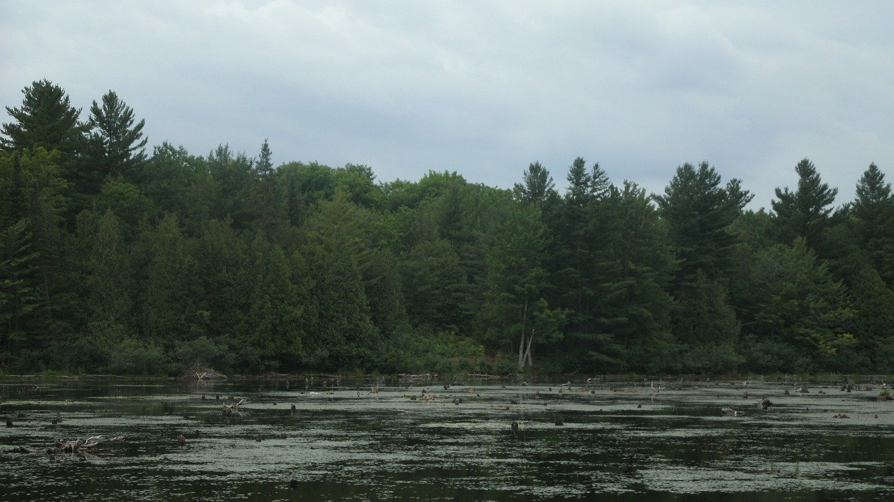
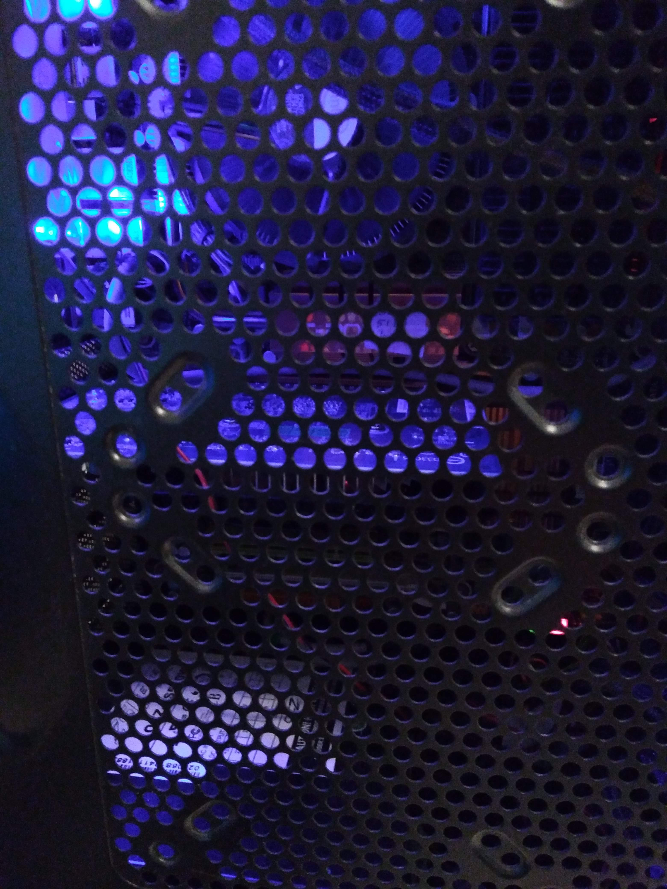
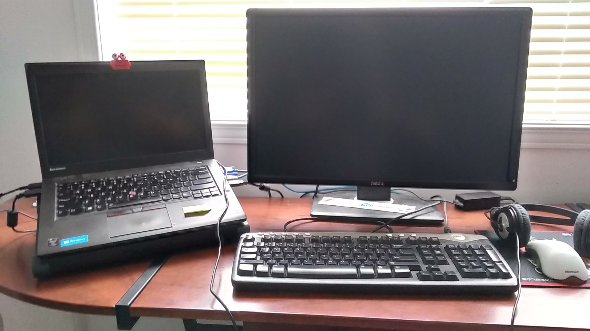
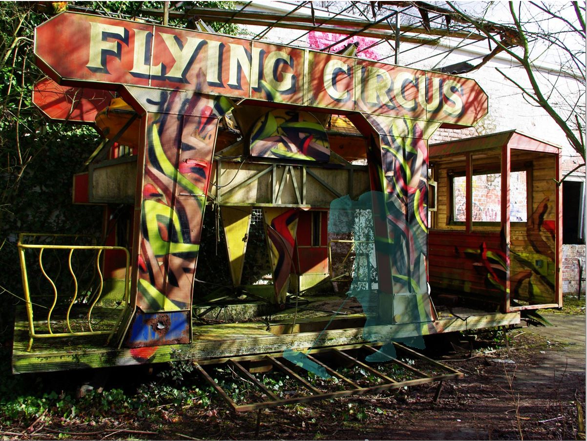
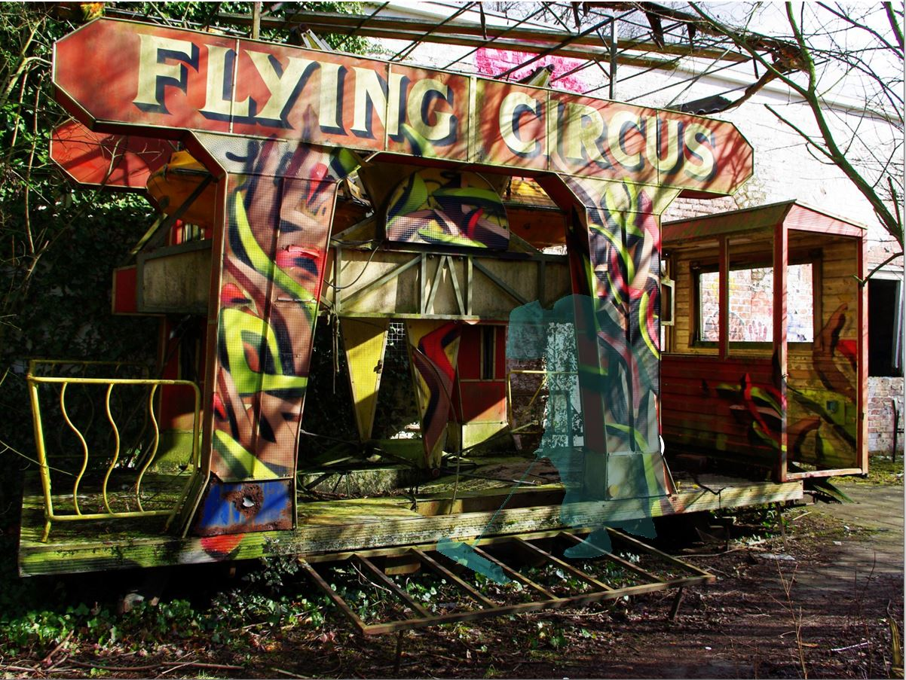

Alan Zhou
Portfolio
Here is my portfolio, showcasing my artwork, videos, and photography!
My Projects
Veloren and Rust Review
Personal Project | August 2022 - October 2022
- Learned about the Rust programming language to learn about its features
- Performed research on Veloren and the Rust programming language to explain how Rust and Veloren works
- Created a video about Veloren and the Rust programming language
Goblet of Fire

Personal Project | April 2020
- Developed a C++ program to draw out participants from an array to recreate the Goblet of Fire algorithm
- Drew a UML diagram to highlight the entity relationships and strucutre of the program
- Click here to see my project
Raspberry Pi Serial Console Server
Fidus Systems Inc, Ottawa, Ontario | April 2019 - May 2019
- Solved a real-world problem of providing serial connections to multiple boards from a remote computer
- Implemented an innovative solution of using a Raspberry Pi board as a serial console server or gateway to multiple boards
- Created a YouTube video to communicate the steps of creating a serial console server with Raspberry Pi
Porting MicroPython into an STM32 Board
Fidus Systems Inc, Ottawa, Ontario | April 2019
- Ported MicroPython to an STM32-based board
- Demonstrated black-box testing by running Python scripts on the STM32 board
- Developed documentation to communicate the porting steps
- Click here to see my project
My Artwork
My Photography





 
